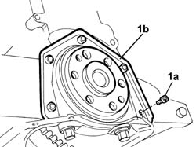
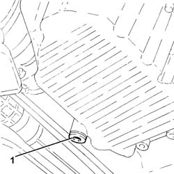
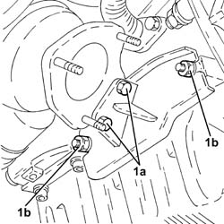
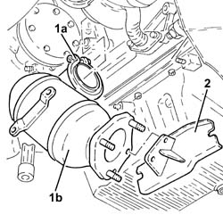
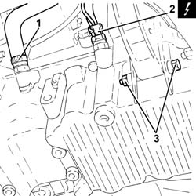
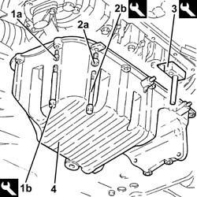
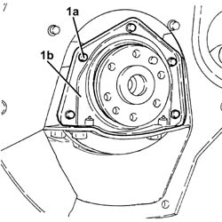
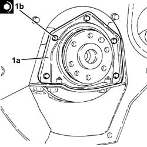
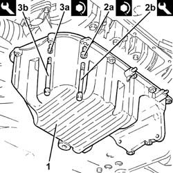

1020D30 oil seal cover, fly wheel side - r + r and replace seals
- Path
- Procedures > 10 ENGINE > 1020 CRANKCASE SUMP AND COVERS > 1020D oil seals on crank shaft > 1020D30 oil seal cover, fly wheel side - r + r and replace seals
- Kind
- repair procedure (removal / refitting; the operation number is the code)
- Applies to
- engines: 1.9 JTD 8V, 1.9 JTD 16V; all production periods
- Interactive page
- https://sloeber94.github.io/elrnDB-a147/en/#/3025005
Applies to: engines: 1.9 JTD 8V; all production periods
 Removing
Removing
 Refitting
Refitting7055B64 Engine compartment DUST shield in front wheel arch (one), left or right - R.R.
1092G10 single engine belt r r
2710A35 intermediate drive shaft mount - r r
1020A20 crank case oil sump - r + r clean seals for sealant application
1. Undo the bolts (1a) and remove the flywheel side oil sealling cover (1b).

Applies to: engines: 1.9 JTD 8V; all production periods
Refitting
RemovingClean the contact surfaces between the crankcase sump and the flywheel side oil seal cover.
Fit a new cover with built-in gasket using a special installer and and fix it tightening the bolts to the recommended torque.
 | Fastening | Component | Ø | Value (daNm) |
|---|---|---|---|---|
1c | Bolt | FLYWHEEL SIDE COVER | M6 | 0.9 |
 | Name | Country |
|---|---|---|
- | Fitting tool | 1.860.817.000 |
1020A20 crank case oil sump - r + r clean seals for sealant application
2710A35 intermediate drive shaft mount - r r
1092G10 single engine belt r r
7055B64 Engine compartment DUST shield in front wheel arch (one), left or right - R.R.
Applies to: engines: 1.9 JTD 16V; all production periods
Removing
RefittingProceed with removal 1084A16 oil dip stick pipe - r r .
1. Undo the plug and drain the engine oil.

Applies to: engines: 1.9 JTD 16V; all production periods
1. Undo the bolts (1a) and the nuts (1b) fixing the catalytic preconverter mounting bracket.

Applies to: engines: 1.9 JTD 16V; all production periods
1. Loosen the collar (1a) and remove the catalytic preconverter (1b).
2. Keep the catalytic preconverter mounting bracket.

Applies to: engines: 1.9 JTD 16V; all production periods
1. Loosen the band and disconnect the condensation oil recovery pipe from the crankcase sump.
2. Disconnect the electrical connection for the engine oil level sensor.
 | Name | Connector |
|---|---|---|
2 | Engine oil level sensor |
3. Undo the bolt securing the intermediate drive shaft mounting to the crankcase oil sump.

Applies to: engines: 1.9 JTD 16V; all production periods
1. Undo the front and rear bolts (1a) securing the crankcase sump using tool (1b).
| Name | Country |
|---|---|---|
1b | Spanner | 1.860.833.001 |
2. Undo the side bolts (2a) securing the crankcase sump using tool (2b).
| Name | Country |
|---|---|---|
2b | Spanner | 1.860.834.001 |
3. Use the tool to cut the crankcase sump sealant.
| Name | Country |
|---|---|---|
3 | Blade | 1.870.718.000 |
4. Remove the crankcase sump.

Applies to: engines: 1.9 JTD 16V; all production periods
1. Undo the bolts (1a) and remove the oil cover, flywheel side (1b).

Applies to: engines: 1.9 JTD 16V; all production periods
Refitting
RemovingThoroughly clean the contact surfaces between the flywheel side oil seal cover and the crankcase sump of any sealant residues.
1. Refit the flywheel side oil seal (1a) in its seating and tighten the bolts (1b) to the specified torque.
| Fastening | Component | Ø | Value (daNm) |
|---|---|---|---|---|
1b | - | - | - | - |

Applies to: engines: 1.9 JTD 16V; all production periods
Thoroughly clean the contact surfaces of crankcase sump and cylinder block of sealant residues.
Apply silicon sealant around the edge of the crankcase sump.
1. Refit the crankcase sump
2. Tighten the side bolts (2a) for the crankcase sump to the recommended torque using the tool (2b).
| Fastening | Component | Ø | Value (daNm) |
|---|---|---|---|---|
2a | - | - | - | - |
| Name | Country |
|---|---|---|
2b | Spanner | 1.860.833.001 |
3. Tighten the front and rear bolts (3a) for the crankcase sump to the recommended torque using the tool (3b).
| Fastening | Component | Ø | Value (daNm) |
|---|---|---|---|---|
3a | - | - | - | - |
| Name | Country |
|---|---|---|
3b | Spanner | 1.860.834.001 |

Applies to: engines: 1.9 JTD 16V; all production periods
Tighten the bolt securing the intermediate drive shaft mounting to the oil sump.
Connect the electrical connection to the engine oil level sensor.
Connect the condensation oil recovery pipe to the crankcase sump and tighten the band.
Place the catalytic converter complete with mounting bracket back in its housing and fasten it to the turbocharger using the collar.
Tighten the nuts and the bolts fixing the catalytic preconverter mounting bracket.
Place a new engine oil drain plug, complete with new gasket, back in its housing and tighten it to the recommended torque.
| Fastening | Component | Ø | Value (daNm) |
|---|---|---|---|---|
- | - | - | - | - |
Proceed with refitting 1084A16 oil dip stick pipe - r r .
Refill the engine oil lubrication system 0010T11 engine oil check level and top up .
Topics linked from this page (7)
- 0010T11 engine oil check level and top up
- 1020A20 crank case oil sump - r + r clean seals for sealant application
- 1084A16 oil dip stick pipe - r r
- 1092G10 single engine belt r r
- 2710A35 intermediate drive shaft mount - r r
- 7055B64 Engine compartment DUST shield in front wheel arch (one), left or right - R.R.
- K32 Engine oil level sensor